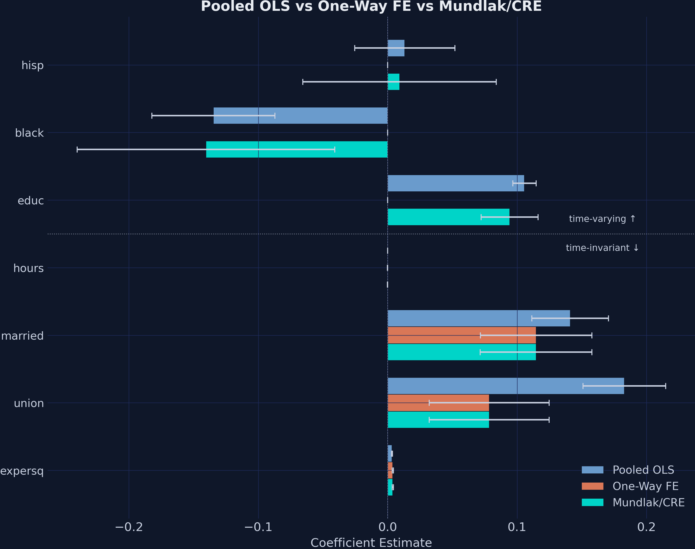
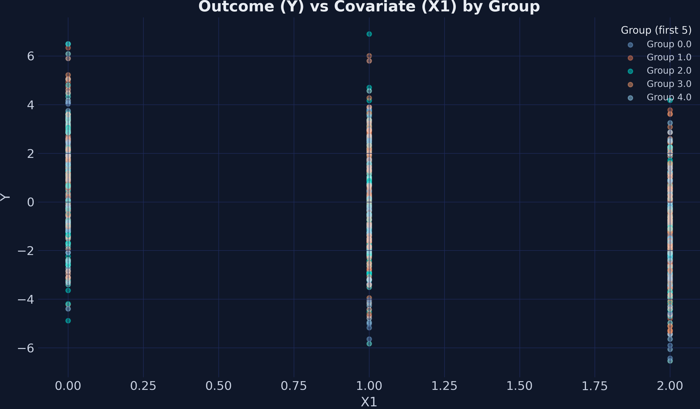
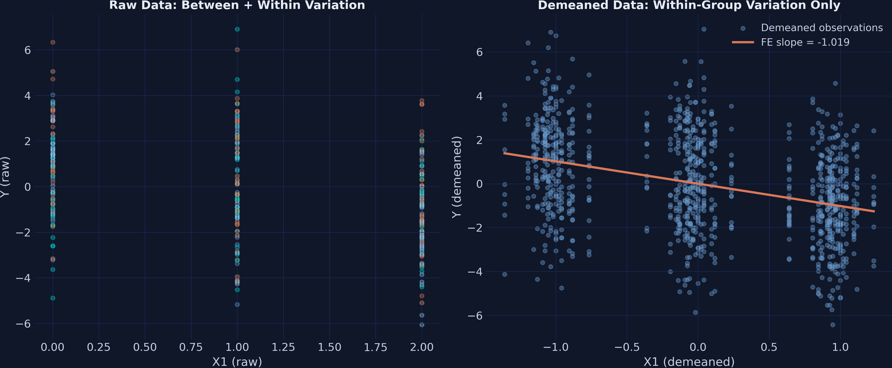
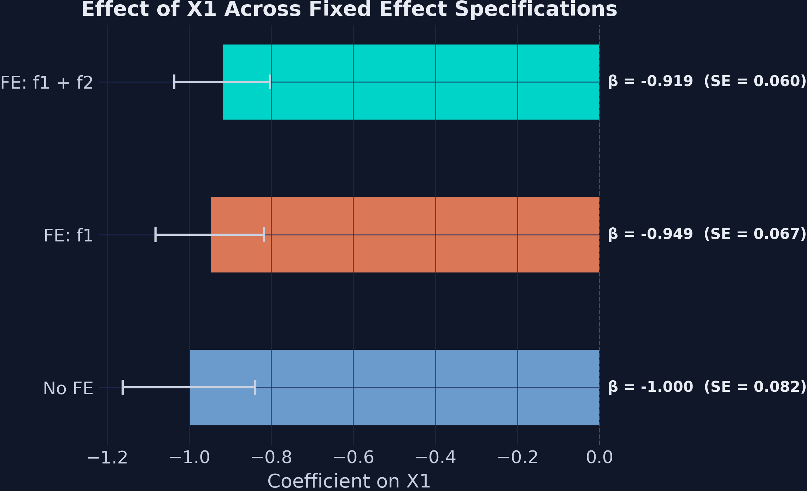
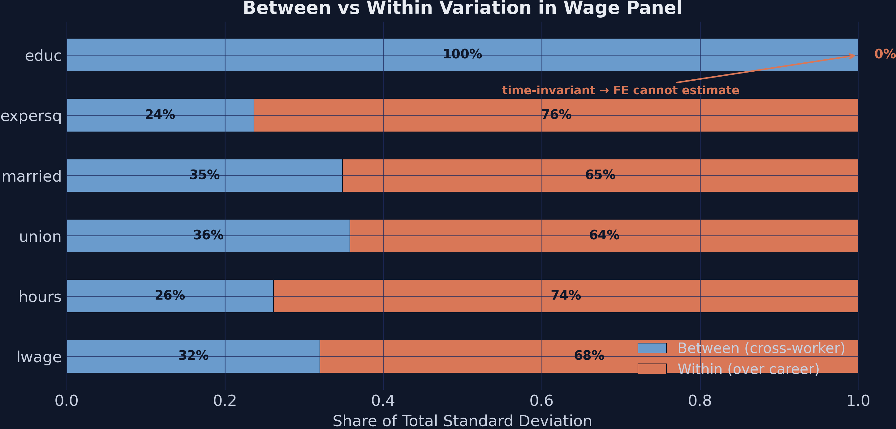
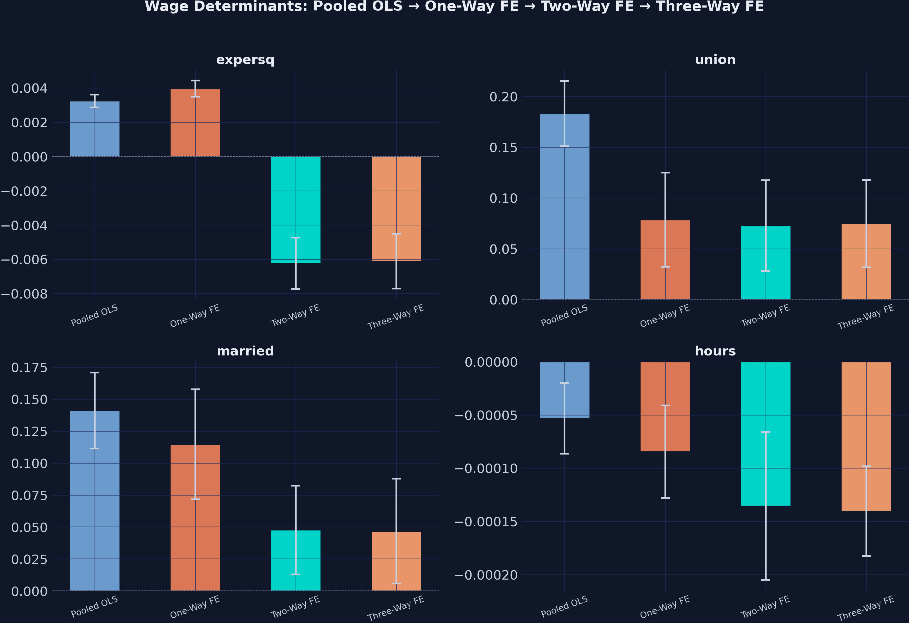
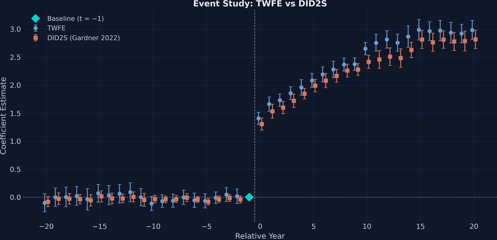

From OLS to two-way FE, IV, and event studies in Python with PyFixest
Nagoya University (GSID)
June 11, 2026
Act I
A simple regression says union-covered workers earn 18.3% more per hour.
But the workers who join unions may also be more able, more motivated, or sorted into better firms. How much of that 18% is the union — and how much is selection?

Pooled OLS vs One-Way FE vs CRE across seven covariates. The union bar collapses once worker fixed effects are absorbed.
Act II

Outcome \(Y\) vs covariate \(X_1\), coloured by group. Clusters sit at different vertical levels.
\[Y_{it} = \alpha_i + X_{it}\beta + u_{it}\]
Add a unit-specific intercept \(\alpha_i\) that absorbs every time-invariant characteristic of unit \(i\) — observed or not.
Block one entire class of confounders — innate ability, firm culture, institutional quality — in a single step.
\[\hat{\beta}_{FE} = \left(\sum_{i} \ddot{X}_i' \ddot{X}_i\right)^{-1} \sum_{i} \ddot{X}_i' \ddot{Y}_i\]
where \(\ddot{X}_i = X_{it} - \bar{X}_i\) and \(\ddot{Y}_i = Y_{it} - \bar{Y}_i\) are demeaned within each group.
Subtract each group’s own average, then run plain OLS — that is all a fixed effect does.

Raw data (left): clusters at different vertical levels. Demeaned data (right): centred on the origin, one negative slope of −1.019.

Coefficient on \(X_1\) across No FE, one-way, and two-way specifications — stable near \(-1.0\) as the CI narrows.
| SE assumption | SE(\(\hat\beta_{X_1}\)) | \(t\)-stat |
|---|---|---|
| iid | 0.0858 | −11.9 |
| HC1 (robust) | 0.0833 | −12.2 |
| CRV1 (group) | 0.1172 | −8.7 |
| CRV3 (group) | 0.1247 | −8.2 |
The estimate never moves; only honesty about uncertainty does.
\[\underbrace{X_1 = \pi_0 + \pi_1 Z_1 + \pi_2 Z_2 + \alpha_i + \gamma_t + \nu}_{\text{first stage}} \;\Rightarrow\; \underbrace{Y_2 = \beta\, \hat{X}_1 + \alpha_i + \gamma_t + \epsilon}_{\text{second stage}}\]
The IV estimate is \(-1.600\) (SE 0.336) vs OLS \(\approx -1.0\) — attenuation reversed; first-stage \(F = 311.54 \gg 10\).
Act III
| Variable | Pooled OLS | One-Way FE |
|---|---|---|
| union | 0.183 | 0.078 |
| married | 0.141 | 0.115 |
| educ | 0.106 | dropped |
| black | −0.135 | dropped |
| R-squared | 0.175 | 0.605 |
One worker intercept each: the union premium halves and \(R^2\) more than triples.
7.8%
union premium under one-way worker FE (was 18.3% in pooled OLS · SE 0.024)

Within vs between share of variation. Education is 100% between-worker — zero within variation.
\[\ddot{educ}_{it} = educ_i - \bar{educ}_i = 0 \quad \text{for all } t\]
\[\ln(wage_{it}) = \beta X_{it} + \gamma Z_i + \pi \bar{X}_i + \epsilon_{it}\]
Replace 545 worker dummies with each worker’s career averages \(\bar{X}_i\).
Time-varying \(\hat\beta\) still match one-way FE; the time-invariant \(\gamma\) become estimable again.

Coefficients across pooled OLS, one-way, two-way, and three-way FE. The big jump is one-way; later dimensions are flat.

Event study: flat pre-trends, sharp jump at treatment, TWFE (blue) sits above DID2S (orange) post-treatment.
Objection. Fixed effects look like a clean experiment — surely 7.8% is the causal union effect.
Response. FE only removes time-invariant confounders. A worker whose ability changes with union status, or reverse causality, still biases \(\hat\beta\). CRE adds an even stronger assumption. Identification rests on no time-varying confounding — not on the absorber itself.